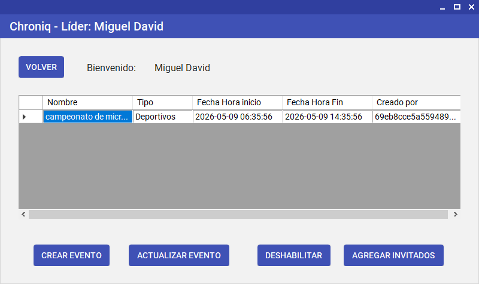
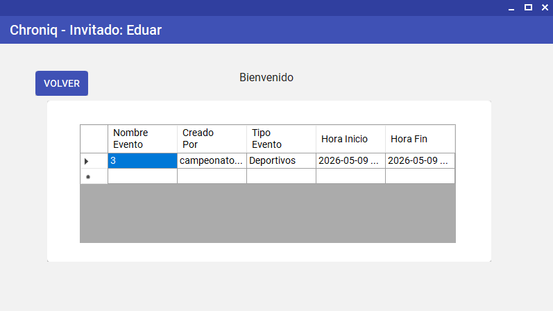
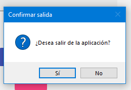
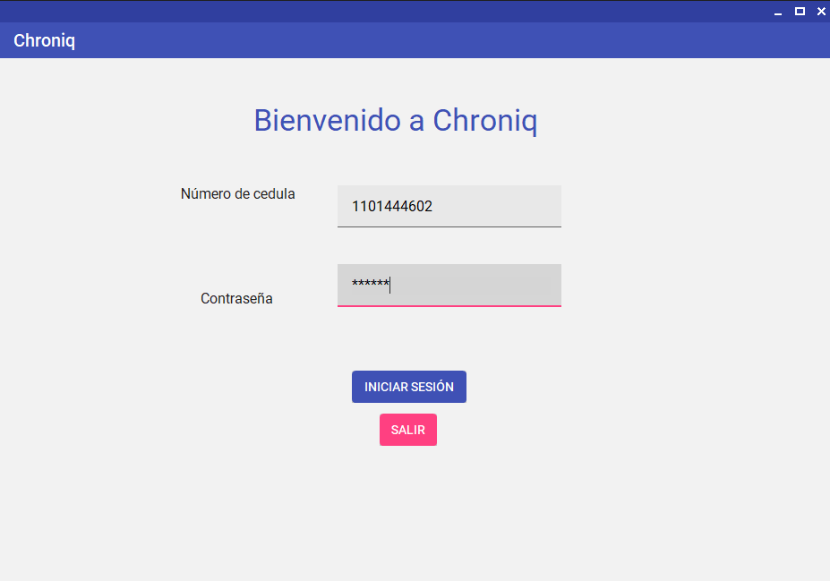
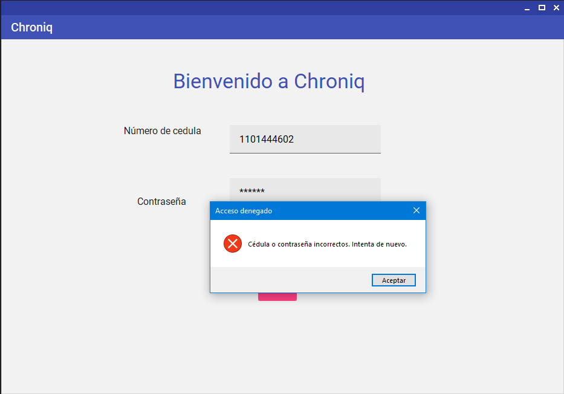
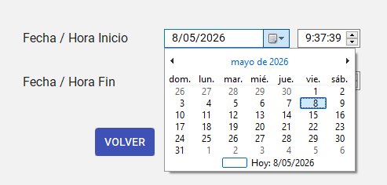
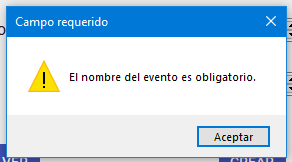
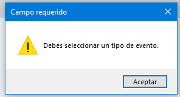
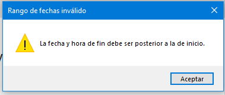
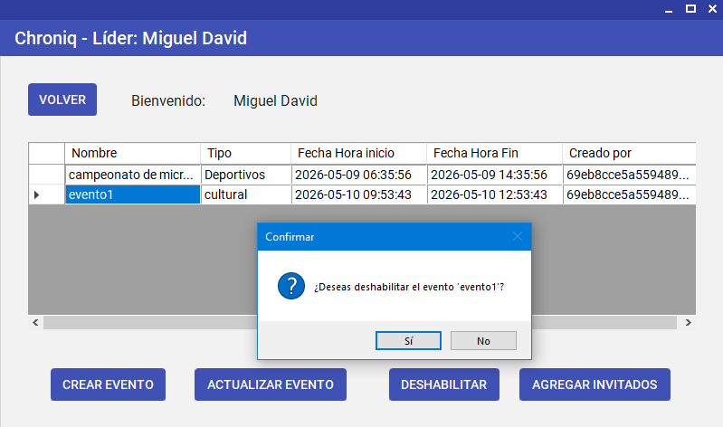

Chroniq
Gestor de Eventos
Guía completa para organizar, consultar y gestionar eventos de manera fácil y segura.
Flujo de navegación del sistema




Ir directamente a una sección
Sección 1
Tabla de contenidos
A continuación encontrará la estructura completa de este manual. Puede hacer clic sobre cualquier elemento para ir directamente a esa sección.
Sección 2
Tabla de ilustraciones
El presente manual incluye representaciones de las pantallas del sistema Chroniq. La siguiente tabla relaciona cada figura con su sección correspondiente, en el orden en que aparecen en el documento.
| N.° | Pantalla | Descripción | Sección |
|---|---|---|---|
| Fig. 1 | Inicio de sesión | Formulario de acceso con número de cédula y contraseña | F1 |
| Fig. 2 | Error de credenciales | Mensaje de error al ingresar datos incorrectos | F1 |
| Fig. 3 | Formulario Crear Evento | Campos para registrar nombre, tipo, fecha y hora | F2 |
| Fig. 3a | Selector de fecha y hora | Componente interactivo para seleccionar fechas y horas | F2 |
| Fig. 3b | Error: Falta nombre | Mensaje cuando no se ingresa nombre del evento | F2 |
| Fig. 3c | Error: Falta tipo de evento | Mensaje cuando no se selecciona un tipo de evento | F2 |
| Fig. 3d | Error: Fechas inválidas | Mensaje cuando la fecha de fin es anterior a la de inicio | F2 |
| Fig. 3e | Error de horario ocupado | Mensaje cuando el horario ya está ocupado | F2 |
| Fig. 4 | Panel principal del Líder | Tabla de eventos con opciones de gestión disponibles | F3 |
| Fig. 5 | Formulario Actualizar Evento | Edición de los datos de un evento existente | F4 |
| Fig. 6 | Formulario Agregar Participantes | Dos paneles: invitados disponibles e inscritos al evento | F5 |
| Fig. 7 | Registro de nuevo invitado | Formulario para crear un nuevo usuario invitado | F5 |
| Fig. 7a | Error: Cédula duplicada | Mensaje cuando se intenta registrar una cédula que ya existe | F5 |
| Fig. 7b | Error: Conflicto de horario (Invitado) | Aviso cuando el invitado ya tiene otro evento en el mismo horario | F5 |
| Fig. 8 | Confirmación de deshabilitar evento | Cuadro de confirmación antes de deshabilitar | F6 |
| Fig. 9 | Panel del Invitado | Listado de próximos eventos asignados al usuario | F7 |
| Fig. 10 | Cierre de sesión | Confirmación antes de cerrar sesión | F8 |
Sección 3
Introducción
Chroniq es una aplicación de escritorio diseñada para simplificar la organización y gestión de eventos. Permite programar actividades, asignar participantes y controlar los horarios de manera ordenada, evitando conflictos y errores de planeación.
El sistema cuenta con dos tipos de usuarios: el Líder, quien tiene control total para crear, consultar, actualizar y deshabilitar eventos, así como gestionar la lista de participantes; y el Invitado, quien puede consultar de forma sencilla los eventos a los que ha sido asignado.
Este manual fue elaborado para guiar a los usuarios en el uso correcto de cada funcionalidad, describiendo paso a paso lo que deben hacer, qué esperar como respuesta del sistema y cómo actuar si algo no sale como se esperaba.
Este documento corresponde a la versión 1.0 de Chroniq.
Sección 4
Recomendaciones
Antes de empezar a usar Chroniq, tenga en cuenta estas recomendaciones para sacarle el mejor provecho y evitar inconvenientes.
Antes de abrir la aplicación
- Asegúrese de que la aplicación esté correctamente instalada en su computador. Si no puede abrirla, contacte a la persona encargada de soporte.
- La aplicación está diseñada para funcionar en computadores con sistema operativo Windows.
Buenas prácticas al usar el sistema
- Ingrese el número de cédula sin puntos, comas ni espacios; solo dígitos.
- Al crear o actualizar un evento, verifique que la fecha de inicio sea siempre anterior a la fecha de fin.
- Antes de deshabilitar un evento, confirme que ya no se vaya a realizar, ya que esta acción no se puede revertir desde la aplicación.
- Al registrar un nuevo invitado, use un número de cédula que no haya sido registrado antes.
- Cierre sesión correctamente usando el botón correspondiente en cada pantalla, en lugar de cerrar la ventana directamente.
Seguridad y acceso
No comparta sus credenciales de acceso (número de cédula y contraseña) con otras personas. El rol de Líder tiene acceso completo al sistema, por lo que debe ser asignado solo a personal autorizado.
Sección 5
Objetivos del manual
Objetivo general
Brindar a los usuarios de Chroniq una guía clara y sencilla que les permita entender y manejar todas las funciones del sistema, sin importar su experiencia previa con aplicaciones de este tipo.
Objetivos específicos
- Explicar cómo ingresar al sistema según el tipo de usuario.
- Describir paso a paso cómo crear, consultar, actualizar y deshabilitar eventos.
- Orientar al Líder en el proceso de registrar nuevos invitados y asignarlos a eventos.
- Indicar al usuario Invitado cómo consultar los eventos en los que fue incluido.
- Mostrar los mensajes de error más comunes y cómo resolverlos.
Sección 6
¿A quién va dirigido?
Este manual está pensado para los dos tipos de usuarios que interactúan con Chroniq:
Usuario Líder
Es la persona encargada de organizar los eventos. Tiene acceso completo al sistema: puede crear, consultar, actualizar y deshabilitar eventos, registrar nuevos invitados y asignarlos a las actividades programadas. Solo se necesita saber usar aplicaciones básicas de Windows para operar este rol sin dificultad.
Usuario Invitado
Es la persona que participa en los eventos. Su acceso es más limitado: únicamente puede ver los eventos futuros a los que ha sido asignado por un Líder. No se requiere ningún conocimiento técnico para usar este perfil.
No necesita saber de programación ni de bases de datos para usar Chroniq. Con saber abrir ventanas, completar formularios y hacer clic en botones es más que suficiente.
Sección 7
Lo que debo conocer
Antes de usar Chroniq, es útil familiarizarse con algunos términos y elementos que aparecen dentro de la aplicación.
Conceptos clave
Evento
Es la actividad central del sistema. Tiene un nombre, una categoría, una fecha y hora de inicio, y una fecha y hora de finalización. El sistema se asegura automáticamente de que no haya dos eventos con el mismo horario.
Líder
Tipo de usuario con acceso completo. Gestiona todos los eventos e invitados del sistema.
Invitado
Tipo de usuario que puede ser creado desde la aplicación. Participa en los eventos a los que fue asignado y solo puede ver su propio listado de actividades.
Número de cédula
Es el identificador de cada usuario en el sistema. Se usa para iniciar sesión y para evitar registros repetidos. Debe ser un número sin puntos ni espacios.
Elementos de la pantalla
- Tabla de registros: Muestra listas de eventos o invitados en filas y columnas. Para seleccionar un elemento, haga clic sobre su fila.
- Selector de fecha: Permite elegir una fecha usando un pequeño calendario que aparece en pantalla.
- Selector de hora: Permite elegir la hora usando flechas para aumentar o disminuir el valor.
- Botones de acción: Cada pantalla tiene botones claramente etiquetados con lo que hacen: Crear, Actualizar, Deshabilitar, Volver, etc.
Funcionalidad 1
Inicio de sesión
Inicio de sesión
¿Para qué sirve? Es la primera pantalla que ve cualquier usuario al abrir Chroniq. Aquí se ingresa el número de cédula y la contraseña para acceder. El sistema reconoce automáticamente si es Líder o Invitado y muestra la pantalla correspondiente.

Fig. 1 — Pantalla de inicio de sesión
Pasos para ingresar al sistema
Mensaje de error: datos incorrectos
Si el número de cédula o la contraseña no son correctos, verá el siguiente mensaje:

Fig. 2 — Mensaje de error al ingresar datos incorrectos
Si no recuerda su número de cédula o contraseña, contacte al Líder del sistema para que le indique cómo proceder.
Funcionalidad 2
Registrar un evento
Registrar un evento
¿Para qué sirve? Permite al Líder crear un nuevo evento en el sistema indicando su nombre, tipo o categoría, y el rango de fechas y horas. Luego de crearlo, el sistema abre automáticamente la pantalla para agregar participantes al evento.
Fig. 3 — Formulario para registrar un nuevo evento
Pasos para registrar un evento
Usando el selector de fecha y hora
Para seleccionar la fecha y hora de forma ágil, el sistema proporciona selectores interactivos:

Fig. 3a — Selector de fecha y hora interactivo
- Selector de fecha: Haga clic para abrir un calendario pequeño. Seleccione el mes, año y día requerido.
- Selector de hora: Use las flechas ▲ y ▼ para aumentar o disminuir la hora. También puede escribir directamente en el campo.
Mensajes de error: campos obligatorios
El sistema verifica que todos los campos estén completos y sean válidos antes de crear el evento. Si falta completar algo, verá los siguientes mensajes:
Error: Falta nombre del evento

Fig. 3b — Error cuando no se ingresa nombre del evento
Error: Falta seleccionar tipo de evento

Fig. 3c — Error cuando no se selecciona un tipo de evento
Error: Fechas inválidas

Fig. 3d — Error cuando la fecha de fin es anterior o igual a la de inicio
Mensaje de error: horario ocupado
Si ya existe otro evento activo en el mismo horario, verá el siguiente aviso:
Fig. 3e — Mensaje cuando el horario ya está ocupado por otro evento
El sistema no permite crear dos eventos con horarios superpuestos. Esto evita conflictos de scheduling y ayuda a organizar mejor las actividades.
Funcionalidad 3
Consultar eventos
Panel principal del Líder
¿Para qué sirve? Luego de iniciar sesión, el Líder accede automáticamente a su panel principal, donde puede ver todos los eventos activos del sistema en una tabla. Desde aquí puede seleccionar cualquier evento y ejecutar las acciones disponibles.
Fig. 4 — Panel principal del Líder con la lista de eventos activos
¿Cómo funciona este panel?
La tabla muestra únicamente los eventos habilitados. Los eventos deshabilitados ya no aparecen en este listado.
Funcionalidad 4
Actualizar un evento
Actualizar un evento
¿Para qué sirve? Permite al Líder modificar los datos de un evento que ya fue creado: su nombre, tipo y las fechas y horas de inicio y fin. Al abrir el formulario, los datos actuales del evento aparecen listos para editarse.
Fig. 5 — Formulario para actualizar un evento existente
Pasos para actualizar un evento
Si hace clic en Actualizar sin haber seleccionado ningún evento en la tabla, el sistema le pedirá que seleccione uno antes de continuar.
Funcionalidad 5
Agregar participantes
Agregar participantes a un evento
¿Para qué sirve? Permite al Líder asignar uno o más invitados registrados a un evento. La pantalla muestra dos paneles: los invitados disponibles (que aún no están en el evento) y los inscritos (los que ya fueron asignados). El sistema verifica automáticamente que el invitado no tenga otro evento en el mismo horario.
Fig. 6 — Pantalla para agregar participantes a un evento
Estructura de la pantalla
- Panel Disponibles (izquierda): Muestra todos los invitados que aún no han sido asignados a este evento.
- Panel Inscritos (derecha): Muestra los invitados que ya fueron agregados a este evento.
- Botones de acción: Permiten agregar, remover y crear nuevos invitados.
Pasos para agregar un participante
El sistema verifica automáticamente que el invitado no tenga conflictos de horario antes de agregarlo. Si existe un conflicto, mostrará un mensaje de error.
Registrar un nuevo invitado
Si el participante que desea agregar no está registrado en el sistema, puede crearlo desde esta misma pantalla.
Fig. 7 — Formulario para registrar un nuevo invitado
Campos requeridos al crear un invitado
- Nombre completo: El nombre completo del participante.
- Género: Seleccione de la lista disponible (Masculino, Femenino, Otro).
- Correo electrónico: Dirección de correo válida (debe incluir el símbolo @).
- Teléfono: Número de contacto (máximo 10 dígitos).
- Edad: Edad numérica (máximo 2 dígitos).
- Número de cédula: Identificación única (entre 4 y 10 dígitos). No puede estar repetida en el sistema.
- Contraseña: Contraseña segura que el invitado usará para ingresar (no puede estar vacía).
El número de cédula es el identificador único de cada usuario. No puede haber dos invitados con la misma cédula en el sistema.
Mensaje de error: cédula ya registrada
Si intenta registrar un invitado con un número de cédula que ya existe en el sistema, verá el siguiente mensaje:
Fig. 7a — Error al intentar registrar una cédula que ya existe
Mensaje de error: conflicto de horario del participante
Si el invitado que intenta agregar ya tiene asignado otro evento en el mismo horario, verá el siguiente aviso:
Fig. 7b — Aviso de conflicto de horario al agregar un participante
Si hay un conflicto de horario, puede: (1) cambiar la hora del evento actual, (2) asignar a otro invitado, o (3) esperar a que se resuelva el conflicto.
Funcionalidad 6
Deshabilitar un evento
Deshabilitar un evento
¿Para qué sirve? Permite al Líder desactivar un evento que ya no se va a realizar. El evento no se elimina del todo, sino que se marca como inhabilitado y deja de aparecer en los listados activos del sistema.

Fig. 8 — Cuadro de confirmación antes de deshabilitar un evento
Pasos para deshabilitar un evento
Una vez que un evento es deshabilitado, no volverá a aparecer en Chroniq. Asegúrese de que realmente desea realizar esta acción antes de confirmar.
Funcionalidad 7
Mis eventos como Invitado
Panel del Invitado — Mis próximos eventos
¿Para qué sirve? Cuando un Invitado inicia sesión, el sistema le muestra directamente su panel personal con todos los eventos futuros a los que ha sido asignado. Este panel es solo de consulta: el Invitado no puede crear, editar ni deshabilitar eventos.
Fig. 9 — Panel del Invitado con sus próximos eventos asignados
¿Cómo usar el panel de invitado?
El sistema filtra automáticamente el listado para mostrar únicamente los eventos cuya fecha de inicio aún no ha pasado. Los eventos del pasado no aparecen en este panel.
Funcionalidad 8
Cerrar sesión
Cerrar sesión
¿Para qué sirve? Permite a cualquier usuario (Líder o Invitado) salir de forma segura del sistema. Al cerrar sesión, el sistema regresa a la pantalla de inicio de sesión y todas las sesiones activas se cierran correctamente.
¿Dónde está el botón de cerrar sesión?
- Para Líderes: El botón suele encontrarse en la esquina superior derecha del panel principal, o en un menú de usuario.
- Para Invitados: Se ubica en la misma posición del panel de eventos del Invitado.
¿Cómo cerrar sesión?
Fig. 10 — Confirmación antes de cerrar sesión
Use siempre el botón de Cerrar sesión en lugar de cerrar directamente la ventana de la aplicación. Esto garantiza que su sesión se cierre correctamente y que nadie más pueda acceder a su cuenta sin autorización.
Si está usando un ordenador compartido con otras personas, es especialmente importante cerrar sesión correctamente para proteger la privacidad de sus datos.
Sección 9
Mensajes de error comunes
Durante el uso de Chroniq, puede encontrarse con diferentes mensajes de error. En esta sección se explican los más comunes y cómo resolverlos.
Errores de Validación de Datos
Error: Campo requerido vacío
Aparece cuando intenta guardar un evento o crear un invitado sin completar un campo obligatorio (nombre, tipo de evento, cédula, etc.).
Solución: Complete todos los campos marcados como obligatorios (generalmente aparecen con un asterisco * o resaltados) y vuelva a intentar.
Error: Formato de correo electrónico inválido
Ocurre cuando ingresa una dirección de correo sin el símbolo @ o en un formato no reconocido.
Solución: Verifique que el correo tenga el formato correcto (ej: usuario@dominio.com) y reintente.
Error: Teléfono excede el máximo de dígitos
Aparece cuando intenta ingresar un número de teléfono con más de 10 dígitos.
Solución: Reduzca el número de dígitos a 10 o menos e intente nuevamente.
Errores de Conflicto de Horarios
Error: No se puede crear el evento por horario ocupado
El sistema detectó que ya existe otro evento activo con un horario que se superpone al que está intentando crear.
Soluciones posibles:
- Cambiar la hora del evento que está creando.
- Cambiar la hora del evento existente (si tiene permisos).
- Deshabilitar el evento existente y crear uno nuevo.
Error: No se puede agregar participante por conflicto de horario
El invitado que intenta agregar ya tiene otro evento asignado en el mismo horario.
Soluciones posibles:
- Cambiar el horario del evento actual.
- Cambiar el horario del otro evento del participante (si es posible).
- Agregar a otro participante en lugar de este.
Errores de Registro de Usuarios
Error: Cédula ya registrada
Intenta registrar un invitado con un número de cédula que ya existe en el sistema.
Soluciones posibles:
- Usar una cédula diferente si se trata de una persona distinta.
- Si es la misma persona, buscarla en la lista de "Disponibles" y utilizarla directamente.
- Verificar que haya escrito correctamente el número de cédula.
Error: Edad inválida
Ocurre cuando intenta ingresar una edad con más de 2 dígitos o un valor no numérico.
Solución: Ingrese solo números hasta 99 y vuelva a intentar.
Errores de Validación de Fechas
Error: La fecha de fin debe ser posterior a la de inicio
Intenta crear un evento donde la fecha y hora de finalización es anterior o igual a la de inicio.
Solución: Verifique que la fecha y hora de fin sean posteriores a las de inicio. Use los selectores para asegurar el orden correcto.
Error: Fecha inválida
Puede ocurrir si intenta ingresar una fecha que no existe (ej: 31 de febrero).
Solución: Use el selector de fecha para elegir una fecha válida.
Si encontró un error no descrito en esta sección, contacte al administrador del sistema. Proporcione el código de error (si aparece) y una descripción de qué acción estaba realizando cuando ocurrió.
Sección 10
Referencias
Las siguientes referencias corresponden a los recursos consultados durante el desarrollo del sistema Chroniq y la elaboración de este manual, organizados conforme a las normas APA (7.ª edición).
Referencias
American Psychological Association. (2020). Publication manual of the American Psychological Association (7.ª ed.). https://doi.org/10.1037/0000165-000
Pressman, R. S., & Maxim, B. R. (2020). Ingeniería del software: Un enfoque práctico (8.ª ed.). McGraw-Hill Education.
Sommerville, I. (2016). Ingeniería de software (10.ª ed.). Pearson Educación.
Las referencias se presentan en orden alfabético por apellido del primer autor o nombre de la organización, con sangría francesa, conforme a las directrices de la 7.ª edición de APA.